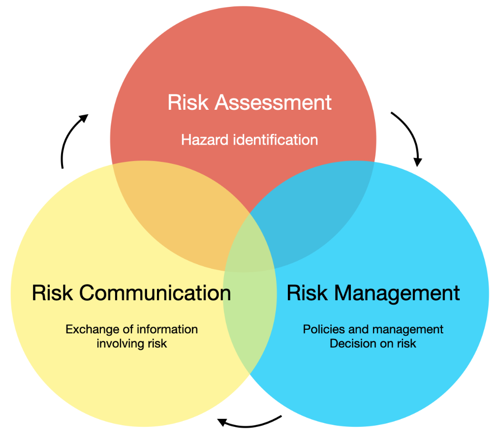

1. Dice-rolling
Simulating rolling a fair six-sided die and calculating the average value after a large number of rolls.
Simulate Rolling the Die
import matplotlib.pyplot as plt
import numpy as np
import random
num_rolls = 1000000 # Number of rolls
rolls = [] # List to store rolled values
sum_values = 0 # Variable to store the sum of rolled values
# Simulate rolling the die num_rolls times
for _ in range(num_rolls):
roll = random.randint(1, 6) # Randomly generate a number between 1 and 6
rolls.append(roll)
sum_values += roll
average = sum_values / num_rolls # Calculate the average value
print(f"The average value after {num_rolls} rolls is: {average}")
Output is:
The average value after 1000000 rolls is: 3.500648
2. Random-walk-problem
How likely is it that a drunk can find the bathroom?
angular movement along with straight movemement
To simulate the random movement of your drunk friend in any direction and visualize the path to the bathroom, you can use the following modified Python code:
import random
import math
import matplotlib.pyplot as plt
def simulate_random_walk(x_start, y_start, x_bathroom, y_bathroom, num_steps):
x = x_start # Starting x-coordinate
y = y_start # Starting y-coordinate
x_values = [x] # List to store x-coordinates of each step
y_values = [y] # List to store y-coordinates of each step
for _ in range(num_steps):
angle = random.uniform(0, 2 * 3.14159) # Random angle in radians
distance = random.uniform(0, 1) # Random distance in any direction
x += distance * (x_bathroom - x) * abs(math.cos(angle))
y += distance * (y_bathroom - y) * abs(math.sin(angle))
x_values.append(x)
y_values.append(y)
if (x, y) == (x_bathroom, y_bathroom):
break
return x_values, y_values
# Set the coordinates of the starting point and the bathroom
x_start = 0
y_start = 0
x_bathroom = 3
y_bathroom = 2
# Set the number of steps for the random walk
num_steps = 20
# Simulate the random walk to the bathroom
x, y = simulate_random_walk(x_start, y_start, x_bathroom, y_bathroom, num_steps)
# Plot the path with solid red line
plt.plot(x, y, '-o', color='red', linewidth=2)
plt.scatter(x_start, y_start, color='green', label='Starting Point')
plt.scatter(x_bathroom, y_bathroom, color='blue', label='Bathroom')
plt.title("Path to the Bathroom")
plt.xlabel("X-coordinate")
plt.ylabel("Y-coordinate")
plt.legend()
plt.grid(True)
plt.show()
Output is:

3. Analyzing Financial Sector Risks: The Role of Monte Carlo Simulation
Introduction:
-
In the fast-paced and ever-changing world of finance, understanding and managing risks is crucial for investors, businesses, and institutions alike.
The financial sector, with its intricate web of interconnected markets and complex instruments, is inherently exposed to various risks that can have significant
repercussions on the global economy. In this blog post, I will delve into the world of risk analysis in the financial sector, and more specifically,
the invaluable role of Monte Carlo simulation in managing these risks.
Understanding Financial Sector Risks:
- The financial sector is no stranger to risks. From market volatility and credit defaults to liquidity crunches and operational failures,
the list of potential pitfalls is extensive. These risks can arise due to economic shifts, geopolitical events, policy changes, or even unexpected
black swan events. For decision-makers and investors, comprehending the likelihood and impact of these risks is of paramount importance.
Enter Monte Carlo Simulation:
- Monte Carlo simulation, a powerful computational technique, has gained immense popularity in the finance industry for its ability to analyze complex
systems and produce reliable risk assessments. Named after the famed Monte Carlo Casino, where randomness is at the heart of games, this method leverages
random sampling to simulate thousands or even millions of possible scenarios.
The Role of Monte Carlo Simulation in Risk Analysis:
Monte Carlo simulation plays a pivotal role in risk analysis in the financial sector by addressing the inherent uncertainties that underpin financial markets. Here's how it works:- Modeling Uncertainties: Financial markets are influenced by countless factors, many of which are difficult to predict with certainty. Monte Carlo simulation allows us to model these uncertainties as probability distributions, capturing the range of potential outcomes.
- Simulating Scenarios: By repeatedly sampling from these probability distributions, Monte Carlo simulation generates a vast array of possible scenarios. Each scenario represents a different combination of inputs, market movements, and economic conditions.
- Assessing Risk Metrics: With a multitude of simulated scenarios at hand, various risk metrics can be computed, such as Value-at-Risk (VaR), Conditional Value-at-Risk (CVaR), and stress testing results. These metrics offer valuable insights into the likelihood of different risk levels and potential losses.
- Stress Testing and Sensitivity Analysis: Monte Carlo simulation is particularly useful for stress testing financial models. It allows analysts to examine how changes in key variables, like interest rates or exchange rates, impact the overall risk exposure.
Benefits of Monte Carlo Simulation:
- Enhanced Decision-Making: Monte Carlo simulation provides decision-makers with a comprehensive understanding of potential risks, enabling more informed and confident choices.
- Flexibility and Scalability: This technique can be applied to a wide range of financial models, from simple single-asset portfolios to complex derivatives and structured products.
- Tail Risk Analysis: Monte Carlo simulation excels in assessing tail risk, or extreme events, which are often challenging to estimate through traditional statistical methods.
Conclusion:
In conclusion, Monte Carlo simulation has emerged as an indispensable tool in managing risks within the financial sector. By modeling uncertainties, simulating scenarios, and assessing various risk metrics, decision-makers can gain valuable insights and fortify their strategies against adverse events. To learn more about Monte Carlo simulation and its application in the financial sector, feel free to visit my comprehensive blog post at: Monte Carlo Simulation in the Financial Sector. Remember, in the world of finance, knowledge is power, and embracing innovative techniques like Monte Carlo simulation can make all the difference in navigating the uncertain waters of the financial market. Stay informed, stay vigilant, and may your financial decisions be ever prosperous!4. Risk analysis in Banking sector
Content:
- Risk analysis
- Various products of the banking sector
- Types of risks analyzed in finanical banking sector
- Market risk
- credit risk
- Liquidity risk
- Operational risk
- Regulatory Risk
- Reputational Risk
- Finanical Risk analysis key steps
- Market risk analysis
- Value at Risk
- Conditional Value at Risk
Risk analysis:
Risk analysis is a process of assessing and evaluating potential risks and their impact on an organization, project, or decision-making. It involves identifying, analyzing, and prioritizing risks to make informed decisions on how to mitigate or manage them effectively.
Various products of the banking sector
The banking sector offers a wide range of products and services to meet the financial needs of individuals, businesses, and institutions. Here are some common products and services offered by banks:
| Sr. No. | Product name | Details |
|---|---|---|
| 1. | Deposit Accounts | Savings accounts, current accounts, and fixed deposit accounts. |
| 2. | Loans and Credit Facilities | Personal loans, home loans, auto loans, business loans, lines of credit, and overdraft facilities. |
| 3. | Credit Cards | Banks issue credit cards that allow individuals to make purchases on credit. |
| 4. | Debit Cards | Debit cards are linked to customers' bank accounts and allow them to make purchases and withdraw cash from ATMs. |
| 5. | Mortgages | Banks provide mortgage loans to help individuals purchase or refinance real estate properties. Mortgage loans typically have long repayment terms and are secured by the property being financed. |
| 6. | Investment Products | Mutual funds, fixed-income securities, stocks, and bonds. |
| 7. | Foreign Exchange Services | Banks facilitate foreign exchange transactions, allowing customers to convert currencies for travel, international trade, or investment purposes. |
| 8. | Payment Services | Online banking, mobile banking, and bill payment facilities. |
| 9. | Trade Finance | Banks offer trade finance services to facilitate international trade transactions. This includes issuing letters of credit, providing export/import financing, and managing trade-related risks. |
| 10. | Wealth Management | Banks provide wealth management services to high-net-worth individuals and institutional clients. These services include investment advisory, portfolio management, estate planning, and other customized financial solutions. |
| 11. | Insurance Products | Life insurance, health insurance, property insurance, and other types of coverage to help individuals and businesses manage risks. |
| 12. | Treasury and Cash Management Services | Banks offer treasury and cash management services to corporate clients, assisting them in managing their cash flow, optimizing liquidity, and conducting efficient financial operations. |
Types of risks analyzed in the financial banking sector
- Probability of Default (PD)
- Loss Given Default (LGD)
- Exposure at Default (EAD)
- Credit Rating
- Financial Ratios and Indicators
- Collateral and Guarantees
- Industry and Economic Factors
- Value at Risk (VaR)
- Expected Shortfall (ES)
- Stress Testing
- Conditional Value at Risk (CVaR)
1. Credit risk
Credit risk refers to the potential for financial losses resulting from the failure of a borrower or counterparty to fulfill their financial obligations. It arises when borrowers or counterparties are unable to repay their loans or meet their contractual obligations. This risk can be mitigated through credit assessments, collateral requirements, diversification of credit exposures, and the use of credit derivatives.
Example: A bank lending money to individuals or businesses faces credit risk. If a borrower defaults on their loan payments, the bank may suffer financial losses.
Parameters used to calaculate credit risk: To calculate credit risk, several parameters are commonly used. These parameters help assess the creditworthiness of borrowers and estimate the likelihood and potential impact of default. Here are some key parameters used in credit risk analysis:
2. Market risk
Market risk models and methodologies are used by financial institutions to assess and manage potential losses arising from changes in market conditions, such as fluctuations in interest rates, exchange rates, commodity prices, and equity prices. These models and methodologies help quantify and monitor market risk exposures and assist in making informed risk management decisions.
Example: An investment fund holding a portfolio of stocks is exposed to market risk. If the stock prices decline due to market downturns, the fund's value may decrease.
Here are some commonly used market risk models and methodologies:
3. Liquidity risk
Liquidity risk refers to the potential difficulty of buying or selling an investment quickly and at a fair price without causing significant price changes. It arises from insufficient market liquidity or an inability to convert assets into cash when needed. Liquidity risk can be managed by maintaining adequate cash reserves, diversifying funding sources, and establishing contingency funding plans.
Example: A mutual fund holding illiquid assets, such as real estate or private equity, may face liquidity risk if investors want to redeem their shares, but the fund struggles to sell the underlying assets quickly.
4. Operational risk
Operational risk is the potential for losses resulting from inadequate or failed internal processes, systems, human errors, or external events. It encompasses risks related to technology, fraud, legal compliance, and business continuity. Operational risk can be mitigated through proper internal controls, staff training, disaster recovery plans, and risk monitoring.
Example: A cyber-attack on a financial institution's systems that compromises customer data and disrupts operations represents operational risk.
5. Regulatory Risk
Regulatory risk arises from changes in laws, regulations, or government policies that impact the financial industry. It includes the risk of non-compliance with applicable regulations, which can lead to financial penalties, reputational damage, or restrictions on business activities. Regulatory risk can be managed through robust compliance programs, staying updated on regulatory changes, and engaging with regulatory authorities.
Example: A bank faces regulatory risk if new legislation imposes stricter capital requirements, necessitating adjustments to its operations and capital structure.
6. Reputational Risk
Reputational risk refers to the potential loss of reputation or public trust in an organization due to negative perceptions or events. It arises from actions, behaviors, or incidents that damage the public image or brand value. Reputational risk can be mitigated by maintaining high ethical standards, providing quality products/services, effective crisis management, and transparent communication with stakeholders.
Example: A scandal involving unethical practices in a financial institution can result in reputational risk, leading to customer loss, decreased investor confidence, and legal consequences.
Financial Risk Analysis key steps
The process of risk analysis in the financial banking sector involves several key steps. While the specific approach may vary among institutions, here are the common steps typically followed in conducting risk analysis:
- Risk Identification
- Risk Assessment
- Risk Measurement and Quantification
- Risk Monitoring and Reporting
- Risk Mitigation and Management
- Risk Communication and Governance
- Regular Review and Update
- Risk reduction strategies
Market Risk
1. Value-at-Risk (VaR)
"Value-at-Risk (VaR) is a widely used measure in risk management that estimates the potential loss in the value of a portfolio or position over a specified time horizon at a certain level of confidence."
OR
"The maximum loss in a given holding period to a certain confidence level."
It provides an estimate of the maximum loss that an organization may face under normal market conditions.
There are several methods to calculate VaR
- Historical VaR:
Historical VaR is based on historical data and does not rely on any specific distribution assumption. The historical method looks at one’s prior returns history and orders them from worst losses to greatest gains—following from the premise that past returns experience will inform future outcomes. It calculates VaR using the historical distribution of portfolio returns. The formula for Historical VaR is:
Historical VaR = Portfolio Value * (1 - Confidence Level) * Return at the Selected Percentile
where:
- VaR: Value-at-Risk
- Portfolio Value: Total value of the portfolio being assessed
- Historical Return Percentile::The desired percentile of the historical return distribution, typically based on a confidence level (e.g., 95%, 99%).
- VaR: Value-at-Risk
- Parametric VaR (Variance-Covariance Method): Rather than assuming that the past will inform the future, the variance-covariance method, also called the parametric method, instead assumes that gains and losses are normally distributed. This way, potential losses can be framed in terms of standard deviation events from the mean. It is one of the most commonly used formula is the Parametric VaR, which assumes that the portfolio returns follow a normal distribution.
VaR = Portfolio Value × z-score × Standard Deviation
where:
- VaR: Value-at-Risk
- Portfolio Value: Total value of the portfolio being assessed
- z-score: The number of standard deviations corresponding to the desired level of confidence. For example, for a 95% confidence level, the z-score is 1.96.
- Standard Deviation: The standard deviation of the portfolio returns, which represents the portfolio's volatility.
- VaR: Value-at-Risk
- Monte Carlo VaR:
A third approach to VaR is to conduct a Monte Carlo simulation. This technique uses computational models to simulate projected returns over hundreds or thousands of possible iterations. Then, it takes the chances that a loss will occur—say, 5% of the time—and reveals the impact.
Monte Carlo VaR uses random simulations to generate a range of possible portfolio returns and estimates VaR based on the distribution of these simulated returns. The formula for Monte Carlo VaR is:
VaR = Portfolio Value × (1 - Confidence Level)th Quantile of Simulated Returns
where:
- VaR: Value-at-Risk
- Portfolio Value: Total value of the portfolio being assessed
- Confidence Level: The desired level of confidence (e.g., 95%, 99%)
- Simulated Returns:A large number of simulated returns generated based on assumed or estimated distributions of asset returns.
- Historical Return Percentile::The desired percentile of the historical return distribution, typically based on a confidence level (e.g., 95%, 99%).
- VaR: Value-at-Risk
Importance:The value of VaR represents the potential loss or downside risk associated with a portfolio or position.
- A higher VaR value indicates a greater potential loss, indicating a higher level of risk.
- Conversely, a lower VaR value suggests a lower potential loss and, therefore, a lower level of risk.
2. Expected Loss (EL)
Expected Loss (EL) is a risk measure used in financial analysis to estimate the average or expected amount of loss that an organization or portfolio is likely to experience over a given time period. It combines the probability of various loss scenarios with the corresponding potential losses.
- The formula to calculate Expected Loss (EL) is:
- Probability of Default (PD) represents the likelihood or probability that a borrower or counterparty will default on their obligations within a specified time horizon.
- Exposure at Default (EAD) refers to the amount of exposure or the total value of outstanding loans or commitments at the time of default.
- Loss Given Default (LGD) represents the percentage or proportion of the exposure that is expected to be lost in the event of default.
- By multiplying these three factors, the formula estimates the average loss expected for a specific counterparty or portfolio.
- It's important to note that Expected Loss is just one component of the broader credit risk assessment process. It provides a useful measure to assess the potential credit losses and make informed decisions regarding credit risk management, loan provisioning, capital allocation, and pricing of credit products.
EL = Probability of Default (PD) × Exposure at Default (EAD) × Loss Given Default (LGD)
where:
3. Conditional Value-at-Risk (CVaR)
Conditional Value-at-Risk (CVaR), also known as Expected Shortfall (ES), is a risk measure that quantifies the expected loss beyond a certain confidence level. Unlike Value-at-Risk (VaR), which only provides information about the worst-case loss at a specific confidence level, CVaR provides an estimate of the average loss that may occur in the tail of the distribution beyond the VaR threshold.
- The formula to calculate CVaR is as follows::
- Probability of Default (PD) represents the likelihood or probability that a borrower or counterparty will default on their obligations within a specified time horizon.
- Exposure at Default (EAD) refers to the amount of exposure or the total value of outstanding loans or commitments at the time of default.
- Loss Given Default (LGD) represents the percentage or proportion of the exposure that is expected to be lost in the event of default.
- By multiplying these three factors, the formula estimates the average loss expected for a specific counterparty or portfolio.
- It's important to note that Expected Loss is just one component of the broader credit risk assessment process. It provides a useful measure to assess the potential credit losses and make informed decisions regarding credit risk management, loan provisioning, capital allocation, and pricing of credit products.
CVaR = (1 / (1 - α)) * ∫[α, 1] f(x) * x dx
Monte Carlo Simulation to calculate VaR and CVaR
Monte Carlo Simulation is a versatile and powerful tool in the financial sector. Here are some of the applications and use cases where Monte Carlo Simulation can be utilized:
- Portfolio Optimization: Monte Carlo Simulation can be used to optimize investment portfolios by simulating various asset allocation strategies. By generating random samples of asset returns, the simulation can estimate the expected portfolio returns, risk measures such as standard deviation or Value at Risk (VaR), and optimize the portfolio composition to maximize return or minimize risk.
- Option PricingMonte Carlo Simulation is widely employed in option pricing models, such as the Black-Scholes model. By simulating the future stock price movements based on random samples, the simulation can estimate the option's value and evaluate different option trading strategies.
- Risk ManagementMonte Carlo Simulation is valuable in assessing and managing risks in the financial sector. It can be used to simulate market risks, credit risks, operational risks, and other types of risks. By generating random scenarios, the simulation can quantify the potential losses, estimate risk measures such as Value at Risk (VaR) or Expected Shortfall (ES), and evaluate risk mitigation strategies.
- Financial PlanningMonte Carlo Simulation can aid in financial planning and retirement analysis. By incorporating variables like income, expenses, investment returns, and lifespan, the simulation can generate random scenarios of future financial situations. This helps individuals or financial advisors make informed decisions about saving, spending, and investment strategies.
- Stress TestingMonte Carlo Simulation is utilized for stress testing financial systems and institutions. By simulating extreme scenarios and generating random samples of variables like market shocks or defaults, the simulation can evaluate the resilience and stability of financial systems, identify potential vulnerabilities, and inform regulatory decision-making.
- Credit Risk AssessmentMonte Carlo Simulation can be applied to credit risk assessment, especially for loan portfolios and credit derivatives. By simulating default events and loss given default, the simulation can estimate credit risk measures, such as expected loss or probability of default, and evaluate credit portfolio performance under different scenarios.